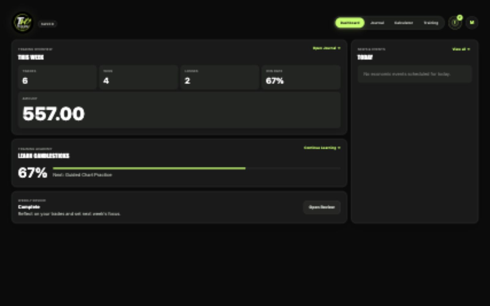

See your real performance
Understand results by account, strategy, symbol, session, and market type instead of relying on memory.
A journal built for better decisions
Traders Hub brings your journal, performance, rules, reviews, market events, and training into one focused workspace.

More than a trade log
Good journaling is not about collecting rows. It is about seeing what is working, catching what is not, and making your next decision with more clarity.
Understand results by account, strategy, symbol, session, and market type instead of relying on memory.
Set personal rules and limits, then receive a warning before emotion turns into another avoidable trade.
Use weekly reviews, discipline insights, and your equity curve to turn trading history into a practical plan.
Learn core trading concepts through interactive lessons, diagrams, and questions without leaving the hub.
Inside Traders Hub
Track the essentials alongside entry, exit, points, notes, discipline, and whether your personal trading rules were followed.

Move beyond profit and loss with account balances, equity curves, discipline insights, weekly and monthly views, and strategy breakdowns.

Check upcoming economic events, calculate position size, follow your rules, and continue learning through interactive training paths.


A simple rhythm
Add the markets, accounts, strategies, sessions, and rules that matter to you.
Capture each trade and the decisions behind it while the context is still fresh.
Use analytics and weekly reviews to find repeatable strengths and costly habits.
Take the lessons into the next week with a focused plan and clearer boundaries.
Ready to build a better trading process?
Traders Hub is available through our Skool community, where you can access the app and continue developing alongside other traders.
Join us on Skool